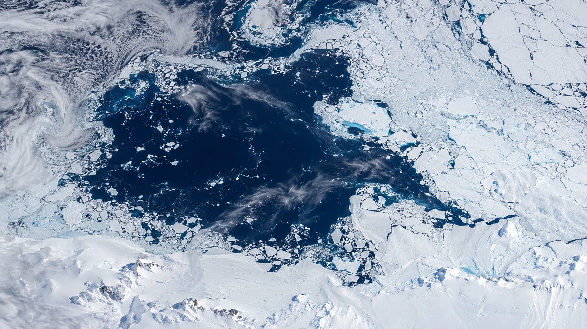
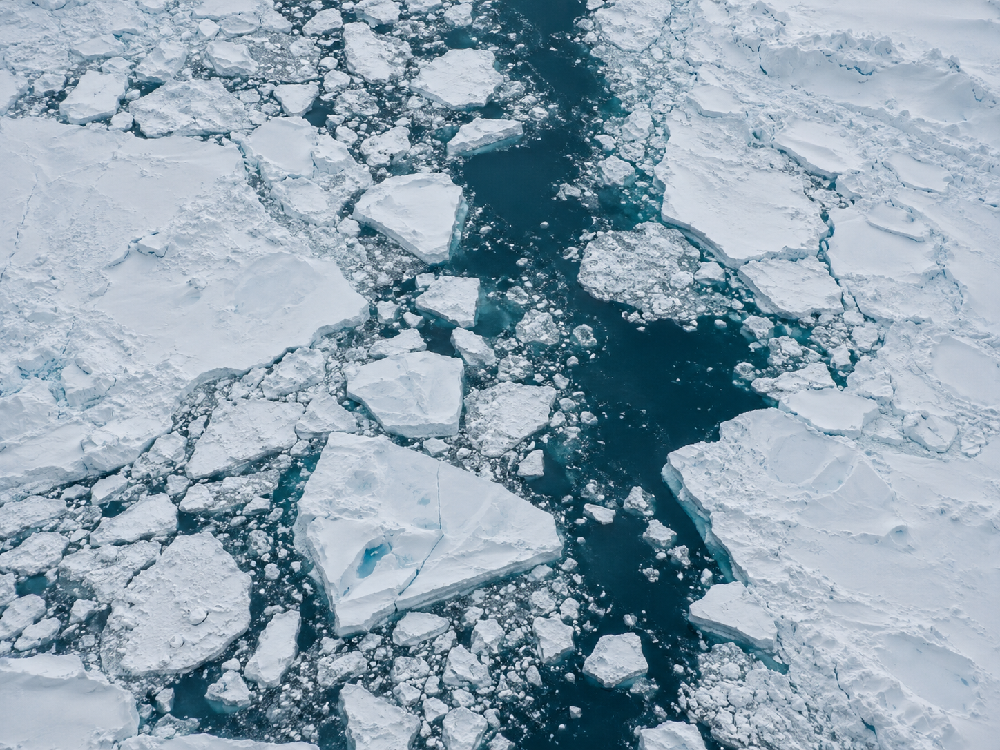

Classroom learning log5 criteria · 8 classes
10SOUTHERN OCEAN / 60°S—78°S
01 / 这是什么
一块不该
被看见的蓝
当周围海面被冰封，冰间湖（polynya）却保持开阔或薄冰状态。它可能由离岸风将海冰推开，也可能由深层较暖海水上涌，融化或阻止表面结冰。
2主要类型：沿岸型 / 海洋型
−1.8°C海水开始结冰的近似温度
1977著名威德尔海冰间湖卫星记录
02 / TWO-MINUTE EXPLAINER
Why does blue water remain in an icy sea?
Explore wind-driven ice movement, warmer water rising, air–sea exchange, brine rejection, and polar life through this two-minute animation.
02:00 · Synthesized Mandarin narration · Embedded Chinese subtitles. Conceptual illustrations, not measured maps or scale models.
03 / 如何形成
三股力量，
打开一扇海洋的窗
冰间湖不是“融化的漏洞”，而是大气、海洋与海冰共同作用的结果。
把冰推开
强劲而持续的离岸风将海冰吹离海岸，露出开阔水带；这里也常成为新海冰的“育苗床”。
把热带上来
深层较暖海水上涌，把热量带到表面，抑制结冰，形成可持续数周甚至数月的开阔海面。
让水旋起来
海底山脊、洋流与风共同改变盐分分布和垂向混合，维持海面的“空洞”。
04 / 从太空看
白色大陆上
不规则的蓝
两张图像均已随项目保存，不依赖外部图片服务。

